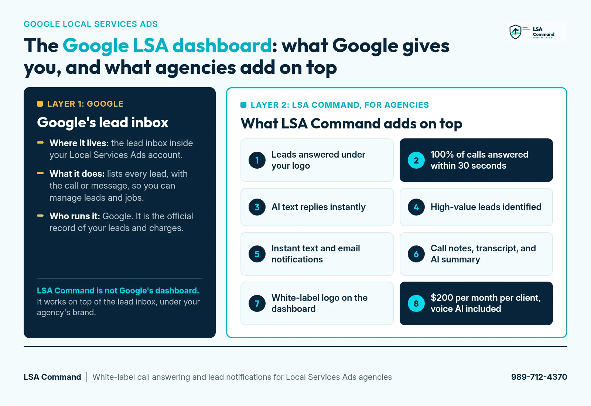
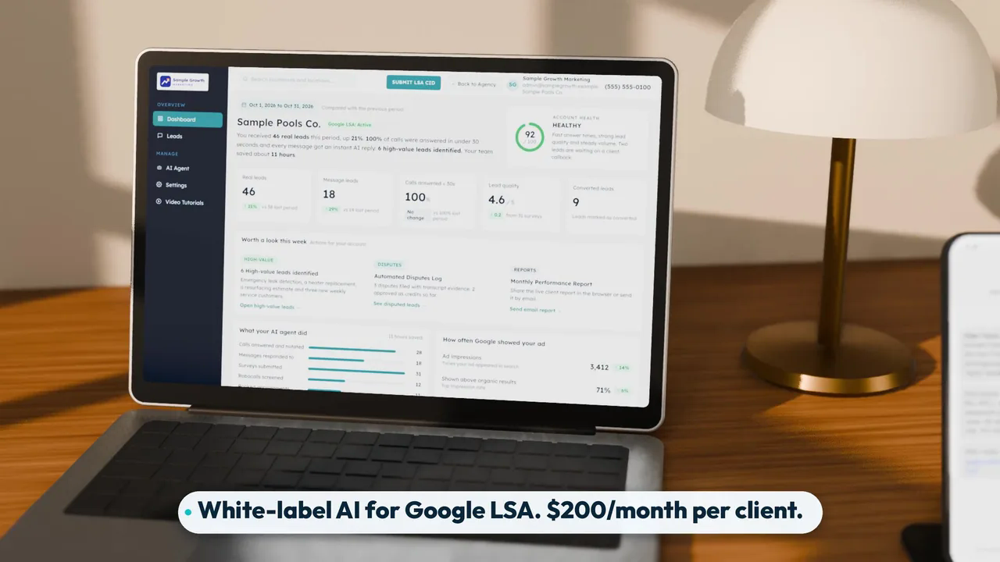
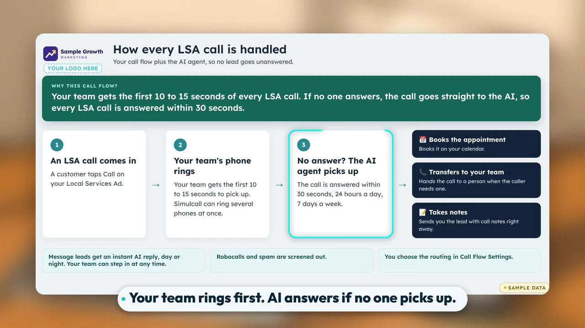
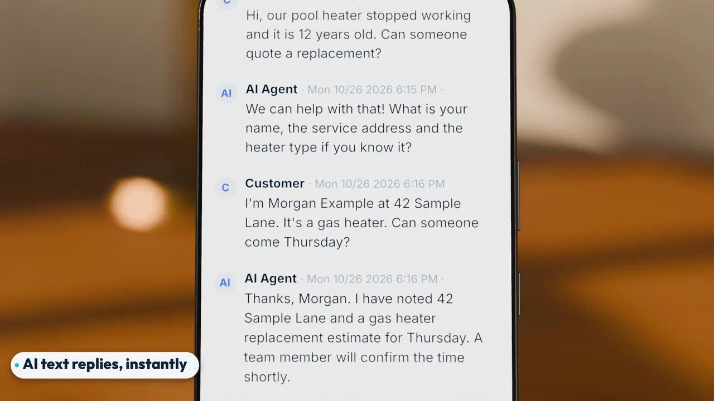
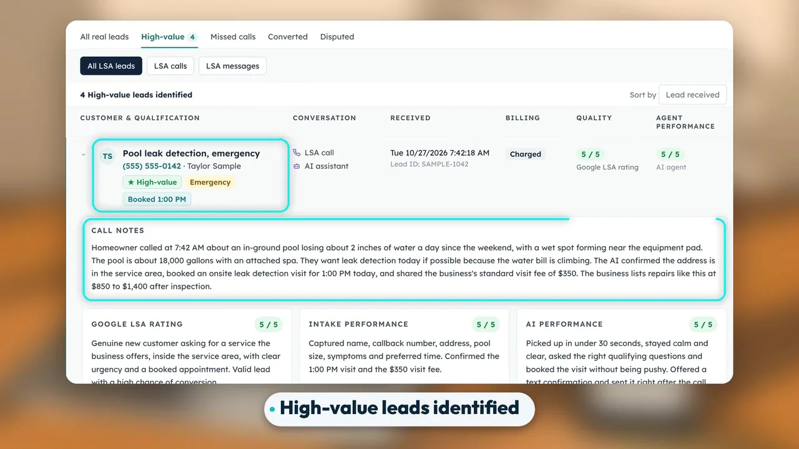
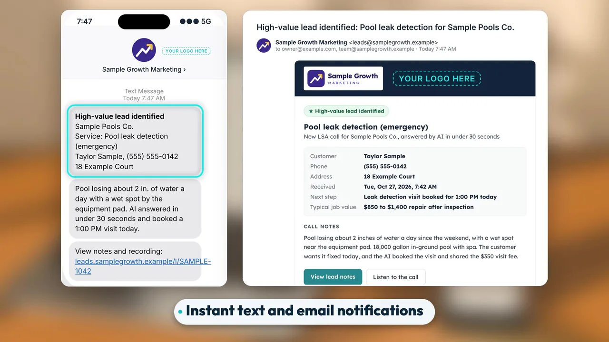
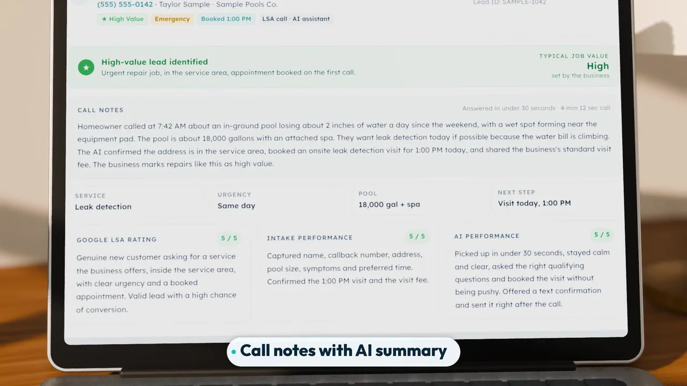
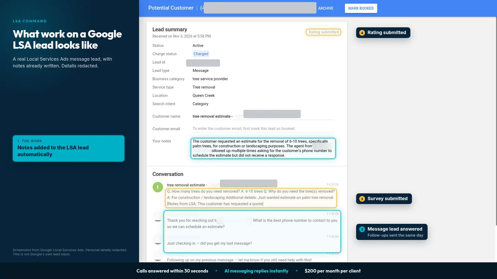
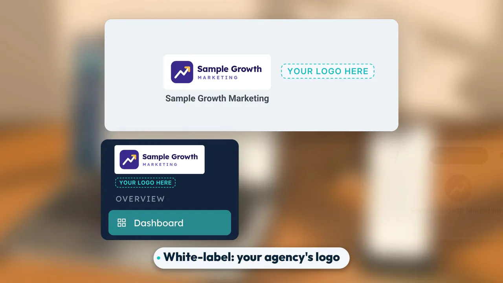

The Google LSA dashboard is the lead inbox inside your Local Services Ads account. Sign in on desktop and open the Leads section. Google's help page puts it this way: "You can always sign in to your lead inbox on desktop to find a record of your leads, contact potential customers, and review booked appointments." The email address used to create the account also receives an email with a clickable link to the lead details in the lead inbox on desktop.
Google's lead inbox keeps the record. It does not answer the phone. LSA Command is the agency layer on top: 100% of your clients' calls answered within 30 seconds, and AI messaging that replies to message leads instantly. The client's team gets the first 10 to 15 seconds, then the AI answers. Built for agencies only. We don't sell to business owners directly. The 58-second walkthrough is below.
One thing to know before you go looking for an app: Google's help page describes the lead inbox on desktop and does not mention a mobile app. Notifications from Google come by email, and in the United States you can set SMS notifications for message leads in Profile & budget. The guide to LSA lead notifications covers the details.
Where the Google LSA dashboard is, and what it does
- Sign in to your Local Services Ads account on desktop.
- Open the "Leads" section. That is the lead inbox.
- Or open the email Google sends to the address that created the account and click the link to the lead details.
What people call the Google LSA dashboard (or the Google Local Services Ads dashboard) is the lead inbox inside a Local Services Ads account. According to Google's help page, from the lead inbox you can:
- Listen to phone lead recordings (US only)
- Review booked jobs
- Receive emails about new leads
- Respond to leads
- Review phone calls generated by your ad
That is a solid record and a place to respond. What it does not do is pick up the phone. When a homeowner calls from the ad, somebody on your client's side still has to answer. When a message lead arrives, somebody still has to reply. Those two moments are where leads get lost: missed calls, voicemail, and message leads that get no reply.
That gap is the job LSA Command does. It is not Google's dashboard, and it does not replace the lead inbox. It works on the same Google LSA leads and gives your agency its own branded dashboard on top. The walkthrough below covers the eight pieces in the same order as the video. For the full feature list, see what you get.

Video chapters
- 0:00 Leads answered by AI under your logo
- 0:06 Every LSA call answered within 30 seconds
- 0:15 AI text replies, instantly
- 0:20 High-value leads identified
- 0:26 Instant text and email notifications
- 0:33 Call notes, transcript, and AI summary
- 0:38 White-label: your agency's logo on the dashboard
- 0:44 $200 per month per client, voice AI included
- 0:49 lsacommand.com and 989-712-4370
The walkthrough: eight parts of LSA Command, chapter by chapter
Each section below matches a chapter in the video, so you can jump to the part you care about.
1. Leads answered by AI, under your logo (0:00)
The video opens with the whole pitch in one line: your clients' Google LSA leads, answered by AI, under your logo. The software is for marketing agencies that manage Google LSA for home-service clients. Your clients see your brand on everything they touch, and their leads get an answer whether or not the office staff is free. The agency page covers how this fits into an agency's service.

2. Every LSA call answered within 30 seconds (0:06)
Every Google LSA call is answered within 30 seconds. That is 100% of calls, not most of them. The order matters: your client's team gets the first ring, which is the first 10 to 15 seconds. If nobody picks up, the call transfers to the voice AI agent, which answers and takes down the caller's details.

The client's people always get the first chance at the call. The AI is the backstop for the job site, the lunch hour, and the call that comes in while the office is on another line. A caller who lands in voicemail can simply call the next listing. For more, see what happens to LSA lead calls nobody answers, how AI call answering works, and what Google actually says about a phone response score.
Published results. Across three pool contractors, leads answered in under 30 seconds rose from 28% to 100% between December 2025 and April 2026 (average of the 3 accounts, April month to date through April 23). Combined monthly LSA leads went from 38 to 147 (3.9x) from December 2025 to March 2026, and average lead quality score rose from 2.43 to 3.87. Pool demand is seasonal and December is slow. Measured from November, combined leads still grew from 53 to 147 (2.8x). See the case studies.
One Bay Area pool contractor went from 18% of leads answered in under 30 seconds (December 2025) to 100% (April 2026, month to date), and from 17 to 56 monthly LSA leads between December 2025 and March 2026 (3.3x), with lead quality rising from 2.35 to 4.13.
3. AI text replies, instantly (0:15)
Message leads get an AI text reply instantly, day or night. A homeowner who sends a message from the ad may be contacting more than one business. The AI replies the moment the message lead comes in, so the homeowner is in a conversation with your client instead of waiting for someone to check the inbox. More on how message leads are handled.

4. High-value leads identified (0:20)
Every lead is scored. On the dashboard that shows up as High-value leads identified, right away, with the reason why. The reason is the useful part. An account manager can see which leads deserve a fast callback from the owner without listening to every recording. When a client asks whether the ads are working, you have a list of the leads that mattered and why each one did.

5. Instant text and email notifications (0:26)
As soon as a lead is handled, a text and an email go out. Both are agency-branded, and both include the caller's address and callback number, so the person reading can call back or dispatch without opening anything else. The frame below shows a sample text and a sample email notification.

These are separate from the emails Google sends. Google's emails go to the address that created the account. LSA Command's notifications go out by text and email under your brand. Details are on the notes and notifications page.
6. Call notes, transcript, and AI summary (0:33)
Every call comes with notes: a full transcript and an AI summary. The summary tells you what the caller wanted in a few lines. The transcript is there when you need the exact words.


LSA Command also writes notes onto the lead inside Google LSA, so the record in Google's lead inbox carries the same context. The screenshot above shows that on a real message lead, with identifiers hidden. LSA Command also fills out the Google lead survey for every lead, blocks robocalls, and sends a weekly lead summary. Those are not in the 58-second video. See what you get.
Want to see this on one of your own client accounts? Book a 30-min call with our team, or call or text 989-712-4370.
7. White-label: your agency's logo on the dashboard (0:38)
It is white-label. Your agency's logo goes on the dashboard, the emails, and the texts. The client sees your dashboard, gets your notifications, and reads your summaries. If you are weighing how to package this for clients, see white-label Local Services Ads for agencies.

8. $200 per month per client, voice AI included (0:44)
All of it is $200 per month per client, with voice AI included and no setup fee. Voice AI is not an add-on. Google's lead charges are separate and billed by Google. Setup usually takes one call. See pricing and how setup works. For the full breakdown, see LSA Command pricing explained. The video closes at 0:49 with the contact details: visit lsacommand.com, or call or text 989-712-4370.
Booked calls, marked inside Google's own LSA platform
When the AI books an appointment on a Google LSA call, LSA Command's terminal bot fills out the Lead Summary directly inside Google's LSA platform. It sets Lead Status to Booked, fills in Customer Name and Location, and writes the job and the appointment into Additional Details. No copy-pasting. Open the lead in Google's lead inbox and the booking is already there.

Google's lead inbox vs. LSA Command, side by side
The two do different jobs on the same leads. The left column is limited to what Google's help page says about the lead inbox.
| Job | Google's lead inbox | LSA Command |
|---|---|---|
| Record of leads | Record of your leads, booked jobs, and phone calls generated by your ad | Agency-branded dashboard for the same Google LSA leads |
| Phone calls | Review calls and listen to recordings (US only) | 100% of calls answered within 30 seconds: team first, then voice AI |
| Message leads | Respond to leads from the inbox | AI text reply instantly, day or night |
| Notifications | Email to the address that created the account, with a link to the lead details | Instant agency-branded text and email with the caller's address and callback number |
| Call detail | Phone lead recordings (US only) | Notes with a full transcript and an AI summary |
| Booked jobs | Review booked jobs in the lead inbox | Lead Summary filled in inside Google's LSA platform: Lead Status set to Booked, Customer Name, Location, and Additional Details |
The Google LSA dashboard for agencies with many client accounts
Google's lead inbox lives inside each Local Services Ads account. An agency with a roster of home-service clients needs every account's calls answered and every client kept informed, without an account manager signing in to each inbox all day. That is the case for a layer on top.
Three related reads, depending on your next question:
- If you are comparing tools for a whole roster, see the guide to managing many LSA accounts as an agency.
- If your question is about client reporting rather than answering leads, see how to choose LSA reporting software.
- If you are choosing a platform, see Local Services Ads software for agencies.
The walkthrough here is narrower. It shows what happens to one lead from the moment it arrives: answered, scored, sent to the client as a notification, written up in notes, and, when the AI books the call, marked Booked inside Google's LSA platform.
Frequently asked questions
- Where is the Google LSA dashboard?
- Google's own dashboard for Local Services Ads is the lead inbox. Sign in to your Local Services Ads account on desktop and go to the Leads section. Google also emails the address used to create the account, with a clickable link to the lead details in the lead inbox.
- What is the difference between Google's lead inbox and LSA Command?
- Google's lead inbox is the record: you can find your leads, respond to them, review booked jobs, and review phone calls generated by your ad. LSA Command is a separate, agency-branded layer that works on those same leads. It answers 100% of calls within 30 seconds, replies to message leads instantly with AI, scores each lead, sends notifications, and adds notes with a transcript and an AI summary.
- Is there a Google Local Services Ads app?
- Google's help page describes the lead inbox on desktop and does not mention a mobile app. Notifications from Google come by email, and in the United States you can set SMS notifications for message leads in Profile & budget. You can always sign in to the lead inbox on desktop.
- Does LSA Command replace Google's lead inbox?
- No. The lead inbox stays where it is, inside the Local Services Ads account. LSA Command works alongside it and writes notes onto the lead inside Google LSA, so Google's record carries the same context. When the AI books an appointment on a call, it also sets Lead Status to Booked and fills in the Lead Summary inside Google's LSA platform.
- How fast are Google LSA calls answered with LSA Command?
- Every call is answered within 30 seconds. Your client's team gets the first ring, about 10 to 15 seconds. If nobody picks up, the call transfers to the voice AI agent, which answers.
- What do the notifications include?
- Notifications go out instantly by text and email, carry your agency's branding, and include the caller's address and callback number.
- Can my agency's logo go on the dashboard?
- Yes. LSA Command is white-label. Your agency's logo goes on the dashboard, the emails, and the texts.
- How much does LSA Command cost, and how long does setup take?
- It is $200 per month per client, with voice AI included and no setup fee. Voice AI is not an add-on. Google's lead charges are separate and billed by Google. Setup usually takes one call.
See the walkthrough on one of your own client accounts
Every Google LSA call answered within 30 seconds, message leads answered instantly by AI, and your agency's logo on the dashboard, the emails, and the texts, for $200 per month per client with voice AI included and no setup fee. Across three pool contractors, leads answered in under 30 seconds rose from 28% to 100% (case studies). Built for agencies only. The call includes an LSA account audit of one client account.